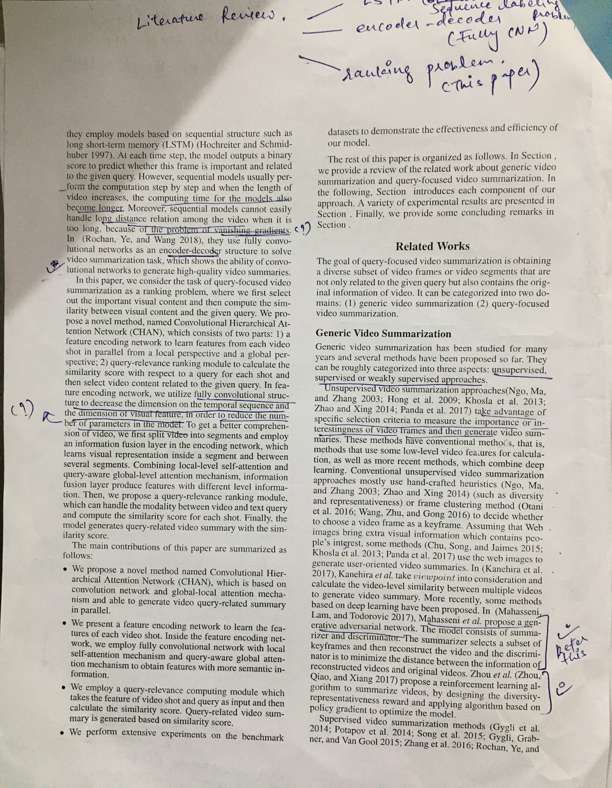
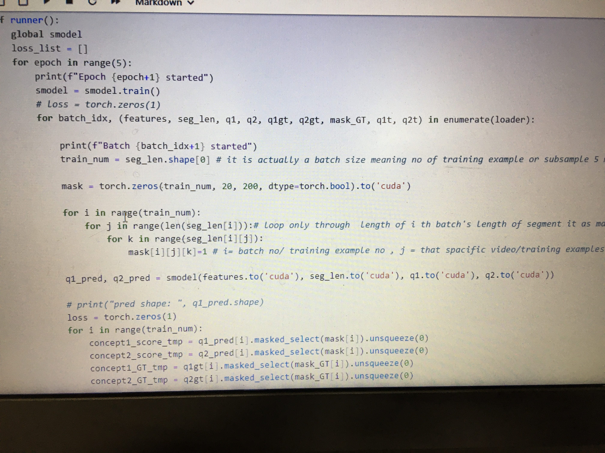

NOTE: This is the draft version

At the start of my master's, I had no understanding of research or the field of deep learning. However, by the end of my program, I published a paper at the ICARCV 2024 conference and shared the code. It's important to note that my environment wasn't ideal for research, lacking both resources and a supportive community. Despite these challenges, I managed to complete my research. The key was finding one or two people I genuinely enjoyed working with—whether that was my guide or a friend. With the right collaborators, you can produce great work, even in less-than-ideal environments.
Have a Guide or Advisor:
If you’re doing research for the first time, it’s helpful to work with someone who has experience. I noticed that without guidance, I was lost and uncertain about which direction to take, as I had no prior experience in research.
Advice: Choose a guide who is relatively young, someone you’ve had positive experiences within the past—perhaps you’ve taken their classes and enjoyed their teaching style. Their eagerness to help students is a key factor in making your decision. If you already know them and respect their work or teaching, you’ll be more motivated to visit and meet them regularly. This connection is crucial, as you will be working with them for the next year or two during your master’s program. Remember, you are the one who ultimately has to carry the responsibility and complete the work. While others may help along the way, and people you work with might even leave midway, don’t stop trying. Believe in yourself, stay dedicated, and trust in your work. With persistence, you will make progress.
Selecting a Problem:
You might already have a particular area of interest, like working on autonomous cars (Tesla, in my case!). However, it’s also important to consult your guide about the current problems they’re working on. Since they’ve likely tackled similar problems before, it’s beneficial to work on something aligned with their expertise.
In general, choose a problem that you’re genuinely interested in, one that your guide also has some experience with or interest in. Also, pick a topic that’s achievable within the timeline of your master's program (1-2 years). Don’t forget to consider available resources—make sure the necessary tools and data are accessible to you.
Motivation:
In research, no one will tell you when or how to work; you’re your own boss. You need to be self-driven, which requires a lot of self-belief. Having one or two people to talk to for motivation—whether it’s your guide, a peer, a friend, or even family—will help keep you focused and encouraged along the way.
Reading Papers:

After five months of working on my research, I finally gained a full understanding of the paper and the model I was implementing. However, even after implementing it and running experiments, there were still countless questions and doubts that remained unanswered. So, patience is key—keep pushing forward.My research focused on query-based video summarization, where a user provides a textual query along with a long video, and the model generates a summarized video based on the query. After several meetings with my guide, I discovered papers from top conferences like AAAI, CVPR, and ECCV. I downloaded them and the next challenge was deciding which paper to dive into. I skimmed through each one and randomly chose a paper on CHAN from the AAAI conference. I then prepared my first presentation to show my guide and explain the task.
😂 This process is an art in itself. You have to work hard to understand the concepts they are presenting, making notes of what questions they address, what their contribution is, and so on. Collaborating with your guide will eventually help you get the right interpretation. Pick one good paper, read it thoroughly, and focus on understanding the task. Remember, the research in these papers builds upon previous work. Top-quality papers will cite earlier works clearly, explaining what they are referring to.
As you read, you’ll come across some unclear aspects, like the dataset used in the paper. To understand more about it—how it was collected and its specific settings—refer to the cited paper. Read it, take notes, and things will start to fall into place. You don’t need to read all the cited papers, just the ones that clarify things like the dataset, evaluation metrics, and any other necessary details.
I vividly remember asking my guide, "How do you read and understand everything with such accuracy and detail?" She kindly replied, "It will come to you with time, but it takes patience." And she was absolutely right.
To stay organized, I used Zotero to collect my papers and OneNote for digital note-taking, which was especially helpful for drawing diagrams since carrying physical pages and notes wasn’t always feasible. A funny thing I noticed is that at the beginning, when I was reading the CHAN paper, I kept encountering the same terminology, model, and concepts. But after 7 or 8 months of working on it, everything started to click into place.
Reading and Practical Implementation:

Reading papers and implementing them should go hand in hand. At the beginning, you’ll spend time reading to understand the concepts, but once you grasp the basics, dive into implementing them. On the first pass, you’ll understand the terminologies and basic ideas. Over time, as you progress, you'll gain more clarity on aspects like the working of the model, the evaluation metrics proposed in other papers, and the dataset used.
Tip: Surround yourself with great people—like your guide. They can help guide you and provide valuable insights throughout the process.
Finding Implementations: A key tip is to look for existing code implementations of the papers you’re reading. Many authors of papers presented at conferences like CVPR, ICLR, ECCV, and AAAI publish their code on GitHub. Once you find the implementation, try setting it up on your local machine and run it. This can take time at first, but don’t get discouraged—solve any errors that pop up, install necessary dependencies, and move forward. At this stage, you may not understand every detail of the code, but simply focus on making it executable.
Start simple: Develop a basic model piece by piece. First, set up a data loader, then implement a simple model, and finally, define the training loop. I began with a toy model, a data loader, and a training loop. At first, I didn’t implement the evaluation method, so I couldn’t evaluate the model. But after several iterations and model changes, I realized the importance of accuracy and implemented the evaluation method. The key is iteration—making gradual improvements over time.
Tip: When you start implementing and experimenting, you'll have many things to note down. Keep detailed notes of every experiment. Use LaTeX to document your findings with proper images—while it might seem challenging at first, it’s actually easy and offers a well-structured way to organize your content. These notes should include insights from each experiment, the problems you encountered, the analysis of results, and any questions you might have. This documentation will be invaluable later on, especially when preparing your thesis.
Time Management: How do you approach all of this? You need to block long hours of uninterrupted time. Each task could take up to a week to complete. The first couple of days should be dedicated to planning, gathering resources, and setting goals. Then, spend long hours over the next few days working on the task, making steady progress. By the end of the week, you should have results to show your guide. Remember: “The work and the outcome will be counted eventually—don’t get distracted by emotions.”
Exceeding Expectations: Strive to exceed your advisor’s expectations. Meet with your guide every week, even if you haven’t made significant progress—just talking to them will help. If you’re reading a lot of papers and making notes, you’ll undoubtedly have tons of questions. Most of your meetings with your guide will revolve around discussing these questions. Make the most of your meetings. Since you can only meet your guide in person once a week (or even once every two weeks), optimize their time. Avoid wasting it with unimportant conversations. Do your homework before the meeting: make a list of the questions you want to ask. If you’re stuck, not getting results, or making little progress, ask your guide—they’ll help. During discussions, take notes. If your guide permits, you can even record voice notes for future reference. Asking for deadlines is also helpful—they’ll keep you on track. Even if you don’t meet the deadlines, setting them helps ensure progress.
Pic: My trip to Dubai to present my paper at the 18th International Conference on Control, Automation, Robotics, and Vision (ICARCV)
This is the journey, and you have to enjoy every bit of it. While publishing a paper at a conference and attending the conference is a great reward, I believe the bigger reward is the journey itself—the growth, the challenges, the learning, and the process that shapes you along the way.
Thanks to my guide, my co-guide, my parents, my cousin brother, my family, and God.